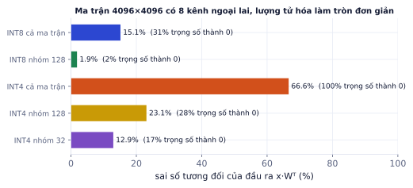
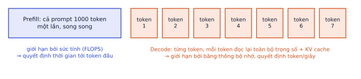
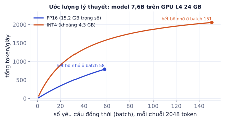

Bài 1
Bộ nhớ trọng số
tính tayModel 7 tỉ tham số (1 GB = 10⁹ byte).
Lời giải
14, 7 và 3,5 GB. INT4 cho phép chạy model 7B trên GPU 8 GB, còn chỗ cho KV cache.
Model tốt mà chạy chậm và đắt thì không đưa vào sản phẩm được. Bài này dạy hai nhóm kỹ thuật: lượng tử hóa (quantization) để model nhỏ đi và chạy được trên GPU yếu hơn, và tối ưu suy luận (KV cache, batching, vLLM) để phục vụ nhiều người dùng nhanh hơn. Bạn cũng sẽ học cách tự tính bộ nhớ và tốc độ, kỹ năng rất hay được hỏi khi phỏng vấn, kèm thí nghiệm đo sai số lượng tử hóa.
Train một lần, chạy hàng triệu lần. Với sản phẩm dùng LLM tự host, chi phí GPU lúc chạy thường lớn hơn chi phí train nhiều lần. Câu hỏi "GPU 24 GB có chạy được model 8B cho 50 người không, mỗi giây ra bao nhiêu token" là câu hỏi thật của khách hàng, và bạn sẽ trả lời được bằng phép nhân đơn giản sau bài này.
Ba con số cần biết về một GPU:
| Thông số | Ý nghĩa | Ví dụ T4 / L4 / A100 80GB |
|---|---|---|
| Bộ nhớ (VRAM) | chứa trọng số + KV cache + activation | 16 / 24 / 80 GB |
| Băng thông bộ nhớ | tốc độ đọc dữ liệu từ VRAM | khoảng 320 / 300 / 2000 GB/s |
| Sức tính FP16 | số phép tính mỗi giây | khoảng 65 / 121 / 312 TFLOPS |
| Định dạng | Byte mỗi tham số | Ghi chú |
|---|---|---|
| FP32 | 4 | train truyền thống |
| FP16 / BF16 | 2 | mặc định khi chạy suy luận; BF16 cùng dải giá trị với FP32 nên ít tràn số |
| INT8 / FP8 | 1 | gần như không mất chất lượng với kỹ thuật tốt |
| INT4 | 0.5 | mất chút chất lượng, giảm 4 lần bộ nhớ so với FP16 |
Bộ nhớ trọng số ≈ số tham số × số byte.
Qwen2.5-7B thực ra có 7,6 tỉ tham số:
Ý tưởng: lưu mỗi trọng số bằng một số nguyên nhỏ, kèm một hệ số scale chung cho cả nhóm.
scale = max|w| / 127 (8 bit đối xứng: số nguyên trong [−127, 127])
q = round(w / scale)
w ≈ q · scale khi tính toán
Nhóm w = [0.8, −0.35, 0.04, −2.54], lượng tử hóa 8 bit:
Lưu 4 số nguyên 1 byte + 1 scale thay vì 4 số 2 byte. Với nhóm 128 giá trị, chi phí của scale gần như không đáng kể.
Một giá trị rất lớn làm scale lớn, và mọi giá trị nhỏ bị làm tròn về 0. LLM thật có đúng hiện tượng này: một vài kênh có giá trị lớn gấp hàng chục lần phần còn lại.
Thí nghiệm: ma trận 4096×4096 trọng số ngẫu nhiên, nhân 25 lần ở 8 kênh để giả lập ngoại lai. Lượng tử hóa làm tròn đơn giản rồi đo sai số tương đối của đầu ra x·Wᵀ trên 64 vector đầu vào:

Cùng thí nghiệm trên ma trận không có ngoại lai: INT8 cả ma trận chỉ sai 1,3%, INT4 nhóm 128 sai 11,7%. Ngoại lai là kẻ thù chính của lượng tử hóa, và nhóm nhỏ là vũ khí đầu tiên.
Thí nghiệm trên dùng làm tròn đơn giản (round-to-nearest). Các phương pháp thật làm tốt hơn nhiều:
| Phương pháp | Cách làm | Dùng khi |
|---|---|---|
| bitsandbytes (NF4, INT8) | lượng tử hóa lúc nạp model; NF4 đặt 16 mức theo phân phối chuẩn | QLoRA, thử nhanh; không nhanh nhất |
| GPTQ | lượng tử hóa từng cột, điều chỉnh các cột còn lại để bù sai số, dùng 128–512 câu hiệu chỉnh | phục vụ 4 bit trên GPU |
| AWQ | tìm kênh quan trọng theo activation, nhân scale bảo vệ chúng trước khi lượng tử hóa | phục vụ 4 bit, thường giữ chất lượng tốt nhất |
| GGUF (llama.cpp) | nhiều mức bit (Q4_K_M, Q5_K_M, Q8_0), chạy CPU và Mac | máy cá nhân, không GPU |
| FP8 | số thực 8 bit, GPU mới (H100, L4) hỗ trợ phần cứng | phục vụ nhanh, gần như không mất chất lượng |
Tin rằng "4 bit mất 1–2% chất lượng" cho mọi tác vụ. Con số trung bình trên benchmark chung không áp dụng cho tác vụ của bạn. Tác vụ cần suy luận nhiều bước, toán, hoặc tiếng Việt (ít trong dữ liệu hiệu chỉnh) có thể tụt nhiều hơn. Luôn chạy lại bộ eval của chính bạn sau khi lượng tử hóa.

Ước lượng tốc độ decode tối đa với một người dùng: băng thông / kích thước trọng số.
T4 có băng thông khoảng 320 GB/s.
Thực tế thấp hơn giới hạn này (giải nén trọng số, overhead), nhưng tỉ lệ cho thấy vì sao lượng tử hóa tăng tốc decode chứ không chỉ tiết kiệm bộ nhớ.
Khi sinh token thứ 501, attention cần key và value của 500 token trước. Tính lại chúng ở mỗi bước là lãng phí, nên ta lưu lại: đó là KV cache.
KV cache = 2 (K và V) × số lớp × số đầu KV × head_dim × số token × byte mỗi số
Qwen2.5-7B: 28 lớp, 4 đầu KV (grouped-query attention: 28 đầu Q dùng chung 4 đầu KV), head_dim 128, FP16.
Nếu model không dùng grouped-query attention (28 đầu KV), mọi con số trên nhân 7.
Khi phục vụ nhiều người, KV cache thường là thứ chiếm bộ nhớ nhiều nhất và quyết định số người phục vụ được cùng lúc. Các cách giảm: grouped-query attention (do thiết kế model), lượng tử hóa KV cache về FP8, giới hạn độ dài hội thoại, tóm tắt lịch sử.
Mỗi bước decode đọc trọng số một lần nhưng có thể sinh token cho nhiều yêu cầu cùng lúc. Đọc trọng số là phần tốn thời gian, nên tổng thông lượng tăng gần tuyến tính theo batch, cho tới khi hết bộ nhớ cho KV cache hoặc chạm giới hạn sức tính.

Hình cho thấy lợi ích thứ hai của lượng tử hóa khi phục vụ: trọng số nhỏ hơn thì còn nhiều chỗ cho KV cache, nên phục vụ được nhiều người hơn. Đường cong cong xuống vì mỗi bước còn phải đọc KV cache của mọi chuỗi trong batch.
| Kỹ thuật | Giải quyết vấn đề |
|---|---|
| Continuous batching | yêu cầu mới vào batch ngay khi có chỗ trống, không chờ cả batch xong; yêu cầu ngắn không phải chờ yêu cầu dài |
| PagedAttention (vLLM) | KV cache cấp phát theo trang nhỏ như bộ nhớ ảo, gần như không lãng phí, chứa nhiều yêu cầu hơn |
| Prefix caching | các yêu cầu có chung system prompt dùng lại KV cache của phần chung |
| FlashAttention | tính attention theo khối trong bộ nhớ nhanh của GPU, không tạo ma trận T×T |
| Speculative decoding | model nhỏ đoán trước vài token, model lớn kiểm tra cả cụm trong một lần; chất lượng giữ nguyên, nhanh hơn |
Trong thực tế, bạn không tự viết những thứ này mà dùng server có sẵn: vLLM, SGLang, TGI (Hugging Face), llama.cpp / Ollama cho máy cá nhân. vLLM cung cấp API tương thích OpenAI, nên code ở P4.1 chỉ cần đổi base_url.
Đo tốc độ bằng một yêu cầu rồi kết luận cho cả hệ thống. Token/giây của một người dùng và tổng thông lượng khi 50 người dùng là hai con số khác nhau hàng chục lần. Đo cả hai, kèm độ trễ p95 của token đầu, ở đúng mức tải bạn dự kiến.
Ghi nhớ: decode bị giới hạn bởi băng thông bộ nhớ, không phải sức tính. Muốn nhanh hơn với một người dùng: model nhỏ hơn hoặc lượng tử hóa. Muốn phục vụ nhiều người: batching, vLLM, và để dành bộ nhớ cho KV cache.
| Chủ đề | Ý chính |
|---|---|
| Bộ nhớ trọng số | số tham số × byte; INT4 nhỏ hơn FP16 4 lần |
| Lượng tử hóa | số nguyên + scale; nhóm nhỏ chống ngoại lai; GPTQ/AWQ tốt hơn làm tròn đơn giản |
| Prefill / decode | prefill giới hạn bởi sức tính (TTFT), decode bởi băng thông (token/giây) |
| KV cache | 2 × lớp × đầu KV × head_dim × token × byte; quyết định số người cùng lúc |
| Phục vụ | batching, continuous batching, PagedAttention, prefix caching; dùng vLLM |
| Thuật ngữ | Nghĩa |
|---|---|
| quantization | lượng tử hóa, biểu diễn trọng số bằng ít bit |
| scale / group size | hệ số nhân / số giá trị dùng chung một scale |
| outlier | giá trị ngoại lai |
| calibration data | dữ liệu hiệu chỉnh dùng khi lượng tử hóa |
| prefill / decode | xử lý prompt / sinh từng token |
| TTFT | time to first token, thời gian tới token đầu |
| memory-bound / compute-bound | bị giới hạn bởi băng thông / sức tính |
| KV cache | lưu key, value của các token đã xử lý |
| GQA | grouped-query attention, nhiều đầu Q chung ít đầu KV |
| continuous batching | thêm yêu cầu vào batch liên tục |
| PagedAttention | quản lý KV cache theo trang (vLLM) |
| speculative decoding | model nhỏ đoán, model lớn kiểm tra |
Model 7 tỉ tham số (1 GB = 10⁹ byte).
14, 7 và 3,5 GB. INT4 cho phép chạy model 7B trên GPU 8 GB, còn chỗ cho KV cache.
Model 32 lớp, 8 đầu KV, head_dim 128, FP16, một chuỗi 4.096 token.
2 × 32 × 8 × 128 × 4096 × 2 byte ≈ 0,54 GB mỗi chuỗi. 16 chuỗi: khoảng 8,6 GB, còn lớn hơn trọng số INT4 của cả model. Khi phục vụ nhiều người, KV cache thường là thứ chiếm bộ nhớ nhiều nhất.
GPU có băng thông bộ nhớ 300 GB/s. Batch 1.
300/14 ≈ 21 token/s; 300/3,5 ≈ 86 token/s. Thực tế thấp hơn giới hạn này (overhead, dequantize), nhưng tỉ lệ cho thấy vì sao lượng tử hóa tăng tốc decode.
Nhóm trọng số w = [0.5, −1.27, 0.02], lượng tử hóa đối xứng 8 bit.
scale = 1,27/127 = 0,01. q = round(w/0,01) = [50, −127, 2]. Khôi phục: [0.5, −1.27, 0.02], không mất gì ở ví dụ này. Nếu nhóm có thêm một giá trị 12,7, scale thành 0,1 và 0,02 bị làm tròn về 0: đó là vấn đề ngoại lai.
Bạn cần phục vụ model 8B cho 50 người dùng đồng thời, mỗi người hội thoại tới 8K token, trên một GPU 24 GB. Nêu các lựa chọn và đánh đổi.
Trọng số FP16 16 GB thì chỉ còn 8 GB cho KV cache, mà 50 chuỗi 8K token cần nhiều hơn thế nhiều. Lựa chọn: lượng tử hóa trọng số 4 bit (AWQ/GPTQ, khoảng 5 GB) để dành chỗ cho KV cache; lượng tử hóa KV cache về FP8; dùng vLLM với PagedAttention và continuous batching; giới hạn độ dài context hoặc tóm tắt lịch sử; nếu vẫn không đủ, dùng model nhỏ hơn hoặc thêm GPU. Đo chất lượng sau lượng tử hóa trên bộ eval của bạn trước khi chọn.
Dùng model đã fine-tune ở Lab 8 (đã gộp LoRA) hoặc Qwen2.5-1.5B-Instruct, trên Colab T4.
Các bước
torch.cuda.max_memory_allocated), thời gian tới token đầu, token/giây khi decode (batch 1), và metric tác vụ của Lab 8.Xong khi
import time, torch
from transformers import AutoModelForCausalLM, AutoTokenizer, BitsAndBytesConfig
name = "Qwen/Qwen2.5-1.5B-Instruct"
tok = AutoTokenizer.from_pretrained(name)
configs = {
"fp16": dict(torch_dtype=torch.float16),
"int8": dict(quantization_config=BitsAndBytesConfig(load_in_8bit=True)),
"nf4": dict(quantization_config=BitsAndBytesConfig(load_in_4bit=True, bnb_4bit_quant_type="nf4",
bnb_4bit_compute_dtype=torch.float16)),
}
def bench(model, prompts, max_new=128):
tokens, t0 = 0, time.time()
for p in prompts:
ids = tok.apply_chat_template([{"role": "user", "content": p}], add_generation_prompt=True, return_tensors="pt").to("cuda")
out = model.generate(ids, max_new_tokens=max_new, do_sample=False)
tokens += out.shape[1] - ids.shape[1]
return tokens / (time.time() - t0)
prompts = ["Giải thích overfitting trong 3 câu."] * 10
for k, kw in configs.items():
torch.cuda.empty_cache(); torch.cuda.reset_peak_memory_stats()
m = AutoModelForCausalLM.from_pretrained(name, device_map="cuda", **kw)
tps = bench(m, prompts)
print(f"{k}: {tps:.1f} token/s | VRAM đỉnh {torch.cuda.max_memory_allocated() / 1e9:.2f} GB")
del m